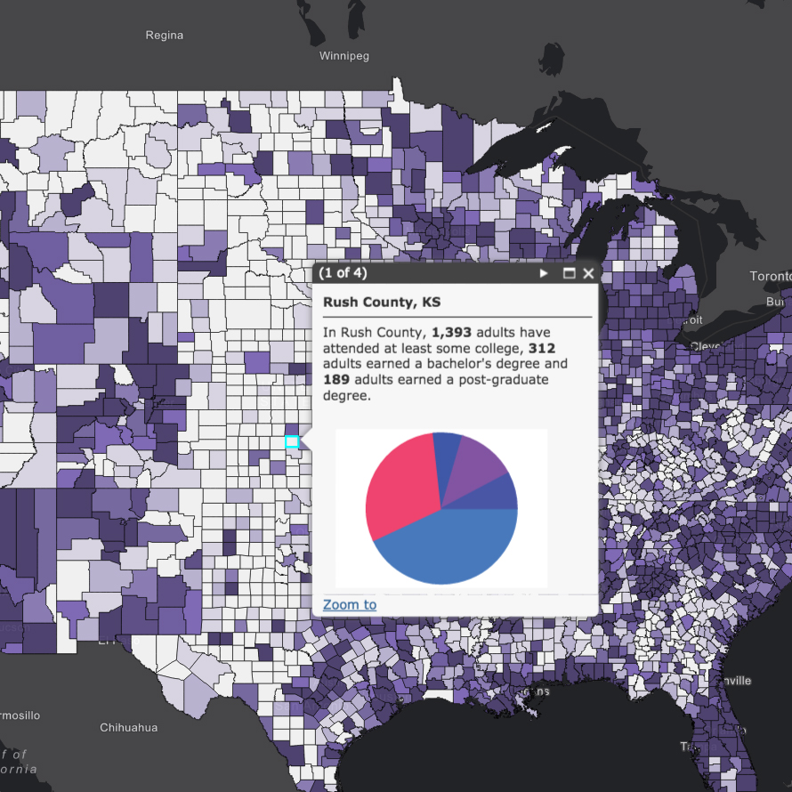
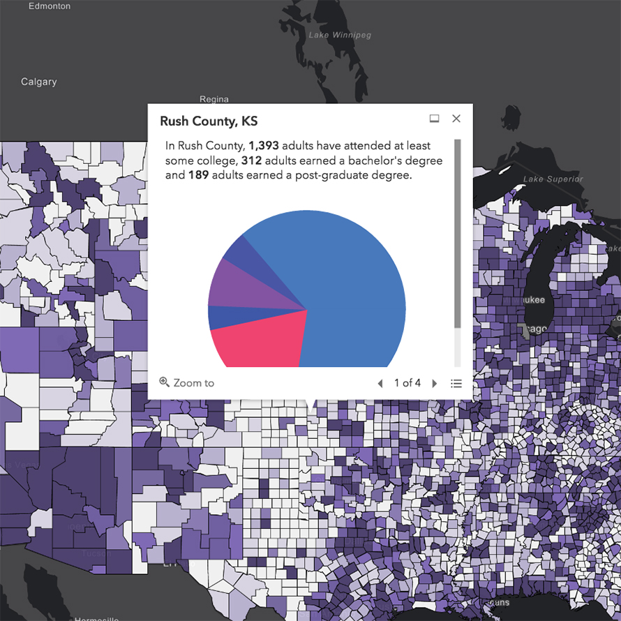
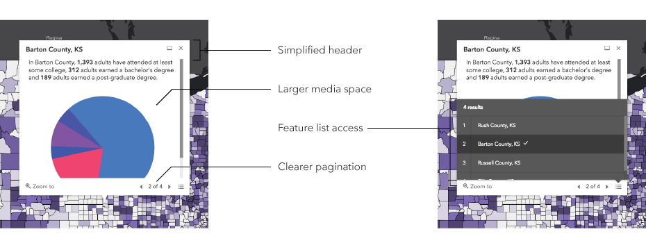

Responsive Map Popups

The map popup is one of the most utilized UI elements in a map-centric application.
The popup is central to inspecting and understanding the details of a map.
Before
Redesigned
Designed for Data
The design priotizes the data with restrained visual presence and intelligently placed controls.
Composed for Beauty
The popup responds to screen (and viewport) size for consistently beautiful popup-to-map composition.
Features
Content Conscious
The popup elevates its content with refined layouts and precise styles.
Elegant Exposure
The redesigned UI exposes complex map content to the user gracefully and effectively.